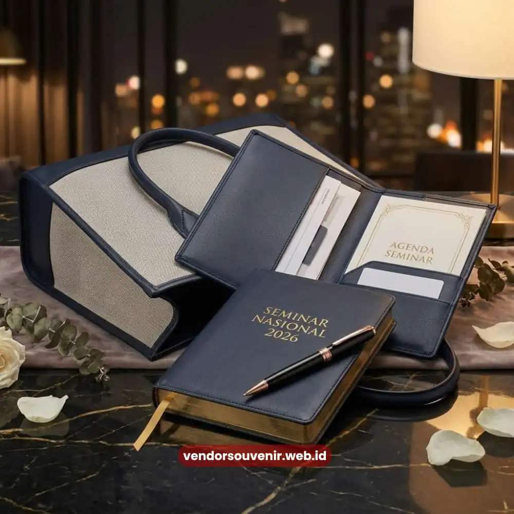

Daftar Isi
Isi seminar kit yang lengkap umumnya mencakup tas jinjing, notebook, pulpen, map dokumen, dan name tag yang seluruhnya dicetak dengan identitas visual acara agar tampil konsisten dan profesional.
Kelengkapan komponen ini menentukan sejauh mana peserta dapat memanfaatkan seminar kit secara fungsional selama acara berlangsung, bukan sekadar sebagai suvenir seremonial.
Bagi panitia acara korporat, menentukan komposisi seminar kit yang tepat sejak awal akan mempermudah proses produksi sekaligus menjaga konsistensi anggaran.
Setiap komponen dalam seminar kit memiliki fungsi berbeda, mulai dari kebutuhan mencatat, menyimpan dokumen, hingga identifikasi peserta di lokasi acara.
Karena itu, penentuan isi seminar kit sebaiknya disesuaikan dengan jenis acara, durasi kegiatan, dan profil peserta yang hadir.
- Tas jinjing menjadi wadah utama sekaligus media branding paling terlihat dalam seminar kit.
- Notebook dan pulpen adalah komponen fungsional yang paling sering digunakan peserta selama acara berlangsung.
- Map dokumen membantu peserta menyimpan materi cetak secara rapi tanpa risiko tercecer.
- Name tag mempermudah identifikasi peserta sekaligus memperkuat kesan profesional acara.
- Komposisi isi seminar kit sebaiknya disesuaikan dengan durasi dan jenis acara agar fungsional dan efisien secara anggaran.
Apa Saja Komponen Utama dalam Seminar Kit?
Komponen utama dalam seminar kit terdiri dari tas jinjing, notebook, pulpen, map dokumen, dan name tag yang bersama-sama membentuk satu paket identitas peserta acara.
Tas jinjing biasanya menjadi elemen pertama yang terlihat karena berfungsi sebagai wadah seluruh perlengkapan lainnya sekaligus media branding yang paling banyak dipegang dan dilihat peserta selama acara berlangsung.
Notebook berperan sebagai media pencatatan utama, terutama untuk seminar atau pelatihan yang menuntut peserta mencatat poin-poin penting dari narasumber.
Pulpen sebagai pasangan fungsional notebook turut menjadi komponen yang hampir selalu ada dalam setiap seminar kit, mengingat fungsinya yang praktis dan langsung terpakai sejak awal acara.
Map dokumen berfungsi menyimpan materi cetak seperti rundown acara, makalah, atau sertifikat sementara agar tidak mudah rusak maupun tercecer.
Sementara itu, name tag memiliki peran krusial dalam aspek identifikasi peserta, terutama pada acara dengan skala besar yang melibatkan banyak instansi berbeda.
Bagaimana Menentukan Kombinasi Isi Seminar Kit yang Tepat?
Menentukan kombinasi isi seminar kit yang tepat perlu mempertimbangkan durasi acara, jumlah peserta, serta tujuan utama penyelenggaraan, apakah bersifat edukatif, seremonial, atau kombinasi keduanya.
Acara dengan durasi lebih dari satu hari umumnya membutuhkan notebook dengan kapasitas halaman lebih banyak dibandingkan acara setengah hari yang cukup dengan notebook berukuran ringkas.
Untuk acara yang menitikberatkan pada materi presentasi dan dokumen pendukung, keberadaan map dokumen menjadi komponen yang sebaiknya tidak dilewatkan agar peserta dapat menyimpan seluruh materi secara terorganisir.
Sebaliknya, untuk acara dengan fokus jaringan atau networking, tas jinjing dengan desain yang menonjol dapat menjadi prioritas karena berfungsi ganda sebagai media branding yang dibawa peserta bahkan setelah acara berakhir.

Kombinasi Isi Seminar Kit yang Fungsional
Apakah Isi Seminar Kit Bisa Disesuaikan dengan Tema Acara?
Isi seminar kit dapat sepenuhnya disesuaikan dengan tema acara, mulai dari pemilihan warna, penempatan logo, hingga jenis bahan yang digunakan pada setiap komponennya.
Penyesuaian ini penting agar seluruh perlengkapan yang diterima peserta terasa selaras dengan identitas visual acara secara menyeluruh, bukan sekadar produk generik yang dicetak seadanya.
Sebagai contoh, acara dengan tema formal dan korporat umumnya menggunakan kombinasi warna netral seperti navy, abu-abu, atau hitam dengan aksen logo emas atau perak, sementara acara dengan tema lebih kasual atau kreatif dapat mengeksplorasi kombinasi warna yang lebih berani sesuai identitas brand penyelenggara.
Mengapa Kelengkapan Isi Seminar Kit Memengaruhi Pengalaman Peserta?
Kelengkapan isi seminar kit memengaruhi pengalaman peserta karena setiap komponen yang fungsional akan langsung digunakan selama acara berlangsung, sehingga menciptakan interaksi berulang antara peserta dengan identitas visual acara.
Semakin sering peserta menggunakan notebook untuk mencatat atau membuka map dokumen untuk memeriksa materi, semakin kuat pula asosiasi visual yang terbentuk terhadap penyelenggara acara.
Sebaliknya, seminar kit yang tidak lengkap atau tidak sesuai kebutuhan fungsional peserta berisiko menimbulkan kesan kurang matang dalam persiapan acara, meskipun dari sisi kualitas cetak sebenarnya sudah baik.
Karena itu, kelengkapan komponen menjadi pertimbangan yang setara pentingnya dengan kualitas produksi itu sendiri.
Menentukan isi seminar kit yang tepat membutuhkan pertimbangan matang terhadap fungsi, durasi acara, dan identitas visual yang ingin ditonjolkan oleh penyelenggara.
Kombinasi tas, notebook, pulpen, map dokumen, dan name tag yang dirancang secara konsisten akan memberikan pengalaman lebih baik bagi peserta sekaligus memperkuat citra profesional acara Anda.

Butuh Bantuan Memilih Isi Seminar Kit yang Tepat?
Tim ahli kami siap membantu Anda menyusun paket seminar eksklusif yang menarik dan fungsional.
Pilihan barang akan disesuaikan dengan ketersediaan budget dan kebutuhan acara Anda.
Seluruh desain akan kami selaraskan dengan identitas visual perusahaan.
Dapatkan penawaran harga terbaik untuk pesanan massal!
FAQ Seputar Isi Seminar Kit
Apakah name tag termasuk komponen wajib dalam seminar kit?
Name tag tidak selalu wajib, namun sangat disarankan terutama untuk acara berskala besar yang melibatkan banyak instansi agar identifikasi peserta lebih mudah.
Apakah bisa memesan hanya sebagian komponen seminar kit saja?
Bisa, komposisi isi seminar kit dapat disesuaikan sepenuhnya dengan kebutuhan dan anggaran, sehingga panitia dapat memilih komponen yang paling relevan dengan acara.
Apa perbedaan notebook untuk seminar satu hari dan multi hari?
Notebook untuk acara multi hari umumnya memiliki jumlah halaman lebih banyak dibandingkan notebook untuk acara satu hari yang cenderung lebih ringkas.
Maroon Souvenir
Partner Corporate Gift terpercaya di Indonesia. Berpengalaman melayani ratusan perusahaan sejak 2018.
Lihat Portofolio Kami